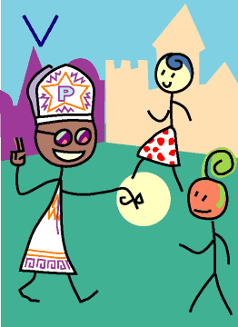

→
Damian Cugley →
Alleged Tarot 2002 →
png →
→
Damian Cugley →
Alleged Tarot 2002 →
png →
| « IIII. The Emperor | VI. The Lovers » | |
|  | ||
Upright: professional advice, learning, teaching
Reversed: bad advice, misinformation
At the time the tarot decks were first devised (Italy around the 14th or 15th century), the Pope was a fact of life and a figure of religious and social authority—in those days religion defined society in a way we cannot really imagine today. This card stands for the institutions and authorities of society. It also symbolizes spiritual or religious teaching or advice, or, more loosely, professional advice in general (such as from your soliciter). In modern decks this card has been renamed The Hieriphant, a reference to a professional religious advisor in classical times.
In magical tradition, the Pope is also the third authority figure in the body–mind–spirit ensemble.
In my Alleged Tarot I have used the older names for some of the cards. The reason for this is that my original Pebble Tarot was based on the tarot deck I had at the time—the 1JJ Swiss tarot, and that uses the old card names. My Pope was the most popular card amongst my friends, and if I wanted to retain the Pope it followed I would be using the old names for the other cards too. You can tell he’s the Pope because he has a fancy hat and a kissable ring. He is also making the mystic hand signal which means ‘as above (in the spirit world), so below (in the material world)’. The Hierophant is often decorated with a pentacle; I have alluded to that in the five-pointed star on his Pope hat.
See also Thirteen’s description on the Aeclectic Tarot site
If your browser supports SVG, then you should visit the SVG version of this page. It is so much more cool!